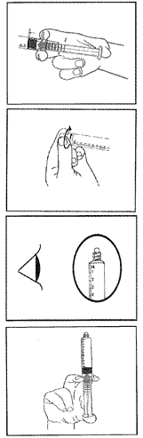

RÉSUMÉ DES CARACTÉRISTIQUES DU PRODUIT
ANSM - Mis à jour le : 13/10/2014
PHENYLEPHRINE AGUETTANT 50 microgrammes/mL, solution injectable en seringue préremplie
2. COMPOSITION QUALITATIVE ET QUANTITATIVE
Phényléphrine…………………………………………………………………………….50,00 microgrammes
sous forme de chlorhydrate de phényléphrine………………………………..………60,90 microgrammes
Pour 1 mL
Une seringue préremplie de 10 mL contient 500 microgrammes de Phényléphrine, (sous forme de chlorhydrate de phényléphrine).
Pour la liste complète des excipients, voir rubrique 6.1.
Solution injectable en seringue préremplie.
Solution limpide et incolore.
pH 4,7 – 5,3.
4.1. Indications thérapeutiques
· Traitement préventif de l'hypotension au cours de l'anesthésie rachidienne pour un acte chirurgical ou obstétrical.
4.2. Posologie et mode d'administration
Voie injectable. Perfusion intraveineuse ou bolus IV.
La phényléphrine devra être uniquement utilisée par ou sous la responsabilité du médecin anesthésiste.
Bolus IV : La dose habituelle est de 50 µg en bolus, renouvelable jusqu'à l'obtention de l'effet recherché.
Les doses peuvent être augmentées en cas d'hypotension sévère, sans dépasser 100 µg en bolus.
Perfusion continue : La dose initiale est de 25 à 50 µg/min. Les doses peuvent être augmentées jusqu’à 100 µg/min ou diminuées pour maintenir la pression artérielle systolique proche de sa valeur de base.
Des doses entre 25 et 100 µg/min ont été considérées comme efficaces pour maintenir la pression artérielle maternelle.
La phényléphrine ne doit pas être utilisée :
· chez des patients présentant une hypersensibilité à cette molécule,
· en association avec les IMAO non sélectifs en raison du risque d'hypertension paroxystique et d'hyperthermie pouvant être fatale (voir rubrique 4.5).
· en association aux sympathomimétiques à action indirecte : bupropion, cafédrine, éphédrine, méthylphénidate, phényléphrine, pseudoéphédrine, théodrénaline, en raison du risque de vasoconstriction et/ou de poussées hypertensives (voir rubrique 4.5).
· en association aux sympathomimétiques de type alpha: vasoconstricteurs destinés à décongestionner le nez, qu'ils soient administrés par voie orale ou nasale (étiléfrine, naphazoline, oxymétazoline, phényléphrine, synéphrine, tétryzoline, tuaminoheptane, tymazoline), ainsi que midodrine, en raison du risque de vasoconstriction et/ou de poussées hypertensives (voir rubrique 4.5).
4.4. Mises en garde spéciales et précautions d'emploi
Surveiller les pressions artérielles et veineuses au cours du traitement.
La phénylephrine doit être administrée avec précaution en cas de :
· diabète,
· hypertension artérielle,
· hyperthyroïdie non contrôlée,
· insuffisance coronarienne et pathologies cardiaques chroniques,
· insuffisance vasculaire périphérique,
· bradycardie,
· bloc cardiaque partiel.
La phénylephrine peut induire une diminution du débit cardiaque. Par conséquent, elle doit être administrée avec une extrême précaution chez des patients atteints d'athérosclérose, chez des patients âgés et/ou chez des patients avec une circulation cérébrale ou coronarienne compromise.
En cas d'insuffisance cardiaque sévère ou de choc cardiogénique, la phényléphrine peut provoquer une aggravation de l'insuffisance cardiaque en raison de la vasoconstriction qu'elle entraîne (augmentation de la post-charge).
En cas d'utilisation concomitante avec les ocytociques l'effet des amines sympathomimétiques presso-actives se trouve potentialisé. Ainsi, certains ocytociques peuvent provoquer des hypertensions persistantes sévères et des AVC peuvent survenir pendant la période post-partum.
La prise de ce médicament est déconseillée, en raison du risque de vasoconstriction et/ou de poussées hypertensives lié à son activité sympathomimétique indirecte avec les médicaments suivants (voir rubrique 4.5) :
· IMAO-A sélectifs,
· alcaloïdes de l'ergot de seigle dopaminergiques (bromocriptine, cabergoline, lisuride ou pergolide) ou vasoconstricteurs (dihydroergotamine, ergotamine, méthylergométrine ou méthysergide),
· en association avec le linézolide.
4.5. Interactions avec d'autres médicaments et autres formes d'interactions
Associations contre-indiquées (voir rubrique 4.3)
+ Sympathomimétiques indirects
Risque de vasoconstriction et/ou de poussées hypertensives.
+ Autres sympathomimétiques indirects
Risque de vasoconstriction et/ou de crises hypertensives.
+ IMAO irréversibles
Hypertension paroxystique, hyperthermie pouvant être fatale. Du fait de la longue durée d’action de l’IMAO, cette interaction est encore possible 15 jours après l'arrêt de l'IMAO.
+ Sympathomimétiques alpha (voies orale et/ou nasale)
Risque de vasoconstriction et/ou de poussées hypertensives.
Associations déconseillées (voir rubrique 4.4)
+ Alcaloïdes de l'ergot de seigle dopaminergiques
Risque de vasoconstriction et/ou de poussées hypertensives.
+ Alcaloïdes de l'ergot de seigle vasoconstricteurs
Risque de vasoconstriction et/ou de poussées hypertensives.
+ IMAO irréversibles
Crises hypertensives (inhibition du métabolisme des amines pressives). Du fait de la longue durée d’action de l’IMAO, cette interaction est encore possible 15 jours après l'arrêt de l'IMAO.
+ IMAO-A réversibles, y compris linézolide et bleu de méthylène
Risque de vasoconstriction et/ou de poussées hypertensives.
Associations faisant l'objet de précautions d’emploi
+ Anesthésiques volatils halogénés
Poussée hypertensive peropératoire.
En cas d’intervention programmée, il est préférable d’interrompre le traitement quelques jours avant l’intervention.
Il n'y a pas de données fiables de tératogenèse chez l'animal. En clinique, des études épidémiologiques n'ont pas mis en évidence d'effet malformatif. L'utilisation de la PHENYLEPHRINE AGUETTANT est envisageable au cours de la grossesse dans le respect des indications.
L'association à certains ocytociques peut entraîner une hypertension sévère (voir rubrique 4.4).
La phényléphrine passe en petite quantité dans le lait.
L'administration à la mère de vasoconstricteurs expose à un risque d'effets cardiovasculaires et neurologiques chez le nourrisson. Cependant, dans le cas d'une administration unique au cours de l'accouchement, l'allaitement est possible.
4.7. Effets sur l'aptitude à conduire des véhicules et à utiliser des machines
Affections psychiatriques
Excitabilité, agitation
Affections du système nerveux
Maux de tête
Affections cardiaques
Bradycardie réflexe, rarement arythmie
Déclaration des effets indésirables suspectés
La déclaration des effets indésirables suspectés après autorisation du médicament est importante. Elle permet une surveillance continue du rapport bénéfice/risque du médicament. Les professionnels de santé déclarent tout effet indésirable suspecté via le système national de déclaration : Agence nationale de sécurité du médicament et des produits de santé (ANSM) et réseau des Centres Régionaux de Pharmacovigilance - Site internet : www.ansm.sante.fr.
Un surdosage peut provoquer des extrasystoles ventriculaires et de courts épisodes paroxysmiques de tachycardie ventriculaire. Une bradycardie réflexe est attendue en cas d'augmentation importante de la pression artérielle.
5. PROPRIETES PHARMACOLOGIQUES
5.1. Propriétés pharmacodynamiques
La phényléphrine est un puissant vasoconstricteur agissant par stimulation quasi exclusive des récepteurs alpha 1 adrénergiques. Cette vasoconstriction artérielle s'accompagne également d'une vasoconstriction veineuse. Elle entraîne une augmentation de la pression artérielle, et une bradycardie réflexe. La puissante vasoconstriction artérielle provoque une augmentation des résistances à l'éjection ventriculaire (augmentation de la post-charge), entraînant une diminution du débit cardiaque, peu marquée chez le sujet sain, mais pouvant être responsable d'une aggravation en cas d'insuffisance cardiaque pré-existante.
5.2. Propriétés pharmacocinétiques
Le volume de distribution à l'équilibre est de 340 litres.
La phényléphrine est éliminée essentiellement par voie rénale sous forme d'acide m-hydroxymandélique et de conjugués phénoliques.
Sa durée d'action est de 20 minutes après administration intraveineuse.
Sa demi-vie d’élimination est de l’ordre de trois heures.
5.3. Données de sécurité préclinique
La phényléphrine est considérée comme une substance non mutagène ni génotoxique ni carcinogène. Elle peut induire une possible toxicité embryofetale et périnatale chez l'animal.
Une attention particulière doit être apportée à son injection pour éviter toute extravasation du produit.
18 mois.
6.4. Précautions particulières de conservation
Conserver la seringue dans son blister, dans l’emballage d’origine, à l’abri de la lumière.
6.5. Nature et contenu de l'emballage extérieur
10 mL de solution en seringue préremplie (polypropylène) ; boîtes de 1, 5, 10, 12, 20, 25, 50 ou 100.
Toutes les présentations peuvent ne pas être commercialisées.
6.6. Précautions particulières d’élimination et de manipulation
Attention à bien respecter le protocole pour l’utilisation de la seringue.
La seringue préremplie est à usage unique, après la première utilisation tout le produit non utilisé doit être jeté.
Le contenu du blister non ouvert et non endommagé est garanti stérile, et par conséquent il ne doit être ouvert qu’au moment de l’utilisation.
En utilisant une technique aseptique, PHENYLEPHRINE AGUETTANT 50 microgrammes/mL, solution injectable en seringue préremplie, peut être utilisée sur un champ stérile.
|
 |
1) Retirer la seringue préremplie du blister stérile. 2) Presser la tige du piston pour libérer le joint, car la stérilisation du produit fini a pu entraîner une adhérence des lèvres du joint sur le corps de la seringue. 3) Dévisser l'embout protecteur en s’assurant de ne pas contaminer par contact l’embout lors de la connexion de la seringue. 4) Vérifier que l’embout de scellage a bien été totalement retiré. 5) Purger l’air de la seringue en poussant légèrement le piston. 6) Connecter la seringue à la voie d'accès IV. Pousser le piston pour injecter le volume requis. 7) Après utilisation, éliminer la seringue selon les pratiques en vigueur dans votre établissement. |
7. TITULAIRE DE L’AUTORISATION DE MISE SUR LE MARCHE
1, rue Alexander Fleming
69007 LYON
8. NUMERO(S) D’AUTORISATION DE MISE SUR LE MARCHE
· 34009 300 010 2 8 : 10 mL en seringue préremplie (polypropylène); boite de 1.
· 34009 300 010 3 5 : 10 mL en seringue préremplie (polypropylène); boite de 5.
· 34009 300 010 4 2 : 10 mL en seringue préremplie (polypropylène); boite de 10.
· 34009 300 010 5 9 : 10 mL en seringue préremplie (polypropylène); boite de 12.
· 34009 300 010 6 6 : 10 mL en seringue préremplie (polypropylène); boite de 20.
· 34009 300 010 7 3 : 10 mL en seringue préremplie (polypropylène); boite de 25.
· 34009 300 010 8 0 : 10 mL en seringue préremplie (polypropylène); boite de 50.
· 34009 300 010 9 7 : 10 mL en seringue préremplie (polypropylène); boite de 100.
9. DATE DE PREMIERE AUTORISATION/DE RENOUVELLEMENT DE L’AUTORISATION
[A compléter ultérieurement par le titulaire]
10. DATE DE MISE A JOUR DU TEXTE
[A compléter ultérieurement par le titulaire]
Sans objet.
12. INSTRUCTIONS POUR LA PREPARATION DES RADIOPHARMACEUTIQUES
Liste I.
Médicament réservé à l'usage hospitalier et à l'usage en situation d'urgence selon l'article R. 5121-96 du code de la santé publique.